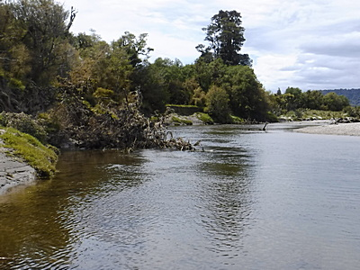
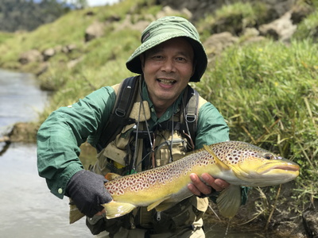
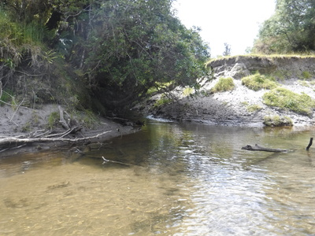
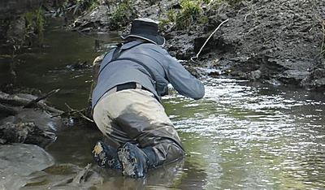

釣行日誌 ＮＺ編 「一期一会の旅：A Sentimental Journey」
ディーン君のダッピング：Dapping
11-23(FRI)-4
さらに遡行は続き、川を渉ってこちら岸に戻って来たディーンと２人で上流へ進んで行く。
何と言うことの無い緩い瀬の、倒木下流の深みに次の１尾が居ると彼が言う。

何も見えないが、キャストする前にデジカメを取り出してポイントの写真を撮していると、
「ゴウ、そのデジカメの色は目立ちすぎるぞ。」
と言われた。確かにこの XP-90 のブライトイエローは鮮やか過ぎて、狡猾で神経質なブラウンたちを脅かしてしまうだろう。顰蹙を買ってしまった。(笑)
ディーンの言うには、鱒は流れの中に流木があると、その上流側もしくは下流側を好んで居着くとのことだった。こんな浅場ならドライで出るんじゃないか？と、彼が再びシケーダを勧めてくれる。距離を出し過ぎて倒木にフライを引っかけないよう、短めでプレゼンテーション。ほとんどフラットな水面にセミフライが浮かび、数秒後大きな口がぱっくりとそれを飲んで沈んだ。
『よしっ！』
今度も合わせが決まり、ブラウンが魚体を捻転させて抵抗する。ほとんど止水の開けたポイントなので落ち着いてファイト出来た。何と言っても今度はディーンのネットが待っている。寄せてきてランディング。握手！

大きな顎と頭の１尾だった。その魚をリリースして歩き始めると、
「ゴウ、この上に小さな沢が流れ込んでいてな....」
ディーンが何やらいわくありげに微笑しつつ先へ進んでいく。30分ほど遡行すると、なるほど右岸からほんの小さな沢が流れ込んでいる。岸も川底も砂地だ。

いったん岸辺に撮影機材とバックパックを降ろしてからディーンが偵察し、
「２尾居るぜ。」
と小声で伝えてくれる。１尾は本流寄り、もう１尾は流れ込みの奥に定位しているらしい。
「ゴウは下流側のやつを狙ってみろ。」
例によって全く魚影は見えなかったが、上から覆い被さった茂みを回避すべく得意の左サイドキャストで、結び替えたグレイゴーストを静かに藪の下に振り込み、着水と同時にストリッピングを始める。何度かのトライで良い場所に入ったらしく、
「よしよしっ！追ったぞっ！」
ディーンの声と同時にラインにガツンとショックが伝わり、ロッドを立てると鱒が掛かった。
「来たっ！」
初めてストリーマーで掛けた！ 流れ出しの左右にある沈木に絡まないよう強引に真っ直ぐ本流へ引きずり出し、浅瀬で鱒を遊ばせつつラインを手繰り込む。昨日今日とキャスティングは無残なものだったが、鱒とのファイティングは何とかコツが掴めてきて、'97-98年頃と思えばずいぶんマシになったなぁと感じる。好きなように鱒に走られることが無くなった。50cm越えのサイズだったので、素早く寄せてディーンのネットへと誘導した。ランディング。また握手！しばしブラウンを眺めた後でリリース。その１尾は砂地の深みへとけだるげに泳ぎ去って行った。
「ゴウ、２尾目、オレがやってみていいかい？」
とディーンが訊ねてくる。あの藪下の流れ込みにはとてもフライを投げ込む自信も技量も無かったので、どうぞどうぞとロッドを渡す。彼はストリーマーを外し、また小さなビーズヘッドに結び替え、静かに沢の出口へと歩み寄って行く。
『さぁて、あそこからどうするのかなぁ....？』
エキスパートの実演を興味津々で観察していると、彼はラインを引き出すことなくロッドも振らず、リーダーとティペットだけを使い、ニンフの重みを利用して鱒の居るらしいポイントへとヒョイッと落とし込んだ。
『おおっ！ これがダッピング（dapping）かぁ！』
日本の渓流での餌釣りで言えば、提灯釣りであろう。狙い始めてから５分以上経った。彼はまだ粘り強くニンフを鱒の鼻先へと入れるべく奮闘している。どうやらターゲットは沢の１番奥に潜んでいるらしく、ディーンは流れの中にひざまずいて徐々ににじり寄っていく。

釣行日誌ＮＺ編 目次へ
サイトマップ
ホームへ
お問い合わせ